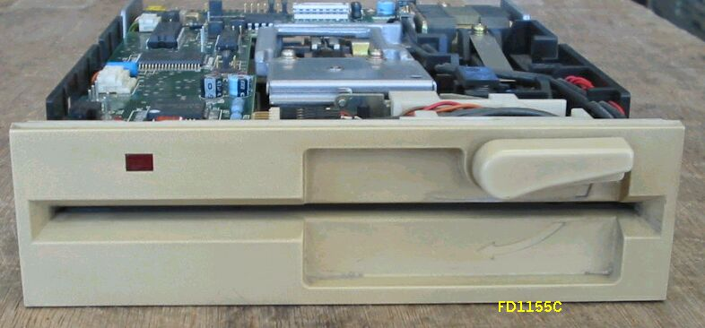
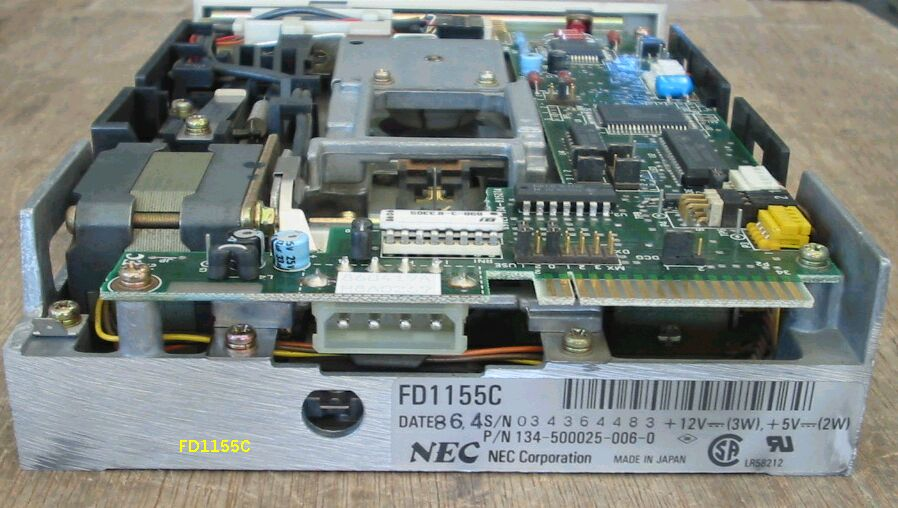

5インチFDD NEC FD1155C
FD1155Cの写真です。ヘッドのシールドがなくなっています。このFD1155Cのように、
金属カバーがない場合、
ヘッドのシールドがないと、電磁誘導ノイズの影響を受けやすく、
上側の（A）ドライブが誤動作する場合があります。
パソコンの本体が裸の場合は正常で、
蓋をすると（A)ドライブが読み込まなくなるというような、
奇怪な現象が発生します。
ヘッドの電磁シールドを、接着剤で貼り付けてやると、何事も無かったかのように解決します。


2006/04/17 追記
98FDDのページに戻る